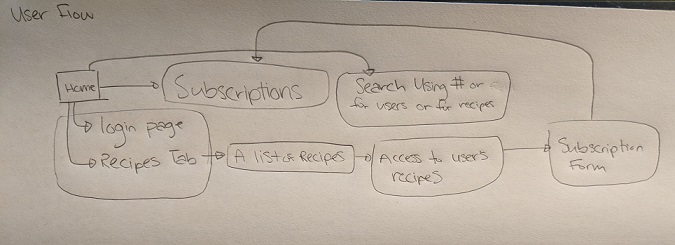

User Flow
This is my userflow plan. I wanted to show some of the functionality of subscriptions and a bit on the searchbar. I plan on making my searchbar able to search up any of the recipes a user wants to look for using a hashtag for primary ingredients, or certain users, or just a specific food they want to find a recipe for. Subscriptions will be logged on the user's page as a way to quickly access another users new posts or content on their subscription feed. I'll concentrate on these elements first before I try to add anything more complicated.